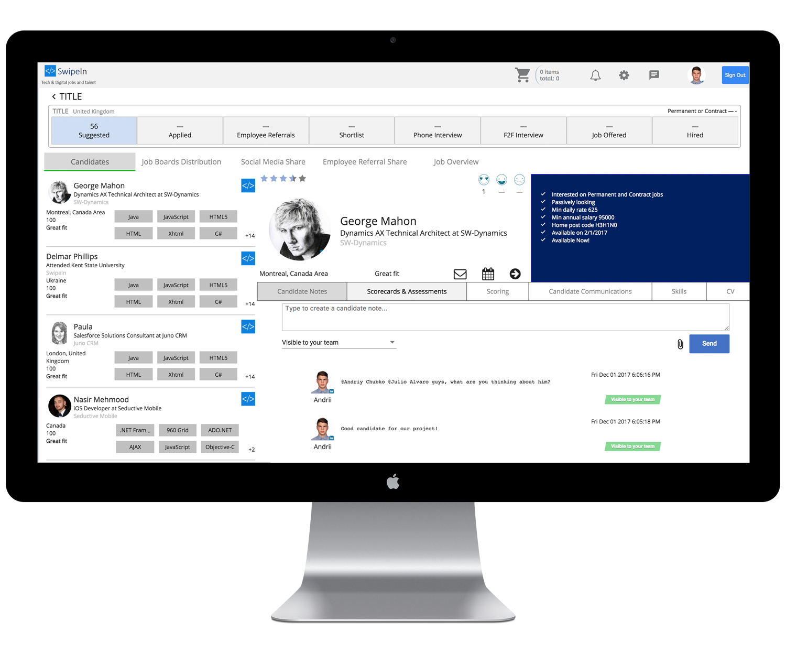

keyboard_arrow_left
Maximize the reach of your jobs by posting to leading job boards, using social media shares and unlocking the potential of employee referrals.
Easily manage candidate tracking and communications all the way from start to hire

keyboard_arrow_right